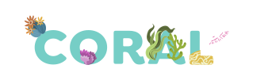

<div class="slider">
  <div class="container">
    <div class="slide">
      <div class="volunteer-banner">
        <div class="text-one">
          <p>
            En pro de
            <strong>desarrollar nuestros programas y proyectos,</strong> tus
            competencias disciplinares, técnicas o profesionales son de
            <strong> gran importancia para nosotros.</strong>
          </p>
        </div>
        <div class="text-two">
          <p>¡Únete a nuestro programa de voluntarios!</p>
        </div>
        <div class="btn-volunteer-redirect">
          <button (click)="print()" [routerLink]="['/voluntarios']" routerLinkActive="active">Ir</button>
        </div>
      </div>
    </div>
    <div class="slide">
      <div class="coral-banner">
        <div class="coral-text-one">
          <p>
            Los arrecifes de coral, son ecosistemas resistentes con el potencial
            para recuperarse de los eventos que causan su destrucción. Esta es
            la razón por la que nuestro observatorio se llama
          </p>
        </div>
        <div class="coral-title-image">
          
        </div>
        <div class="coral-text-two">
          <p>puesto que las <strong>HABILIDADES PARA LA VIDA,</strong> de
            estos arrecifes inspiran nuestra razón de ser. </p>
        </div>
      </div>
    </div>
    <div class="slide">
      <div class="tricycle-banner">
        <div class="title-container">
          <div class="tri-container">
            <h3 class="tri">Tri</h3>
            <p>Tejiendo redes integrales</p>
          </div>
          <div class="ci-container">
            <h3 class="ci">Ci</h3>
            <p>Construyendo integración</p>
          </div>
          <div class="clo-container">
            <h3 class="clo">Clo</h3>
            <p>Cultivando los origenes</p>
          </div>
        </div>
        <div class="tricycle-text">
          <p><strong>Tres ruedas</strong> (adulto mayor, primera infancia, poblaciones vulnerables
            por circunstancias de vida); dos pedales (Salud física; Salid mental), los
            dos en conexidad con las habilidades para la vida.</p>
        </div>
      </div>
    </div>
  </div>
</div>
